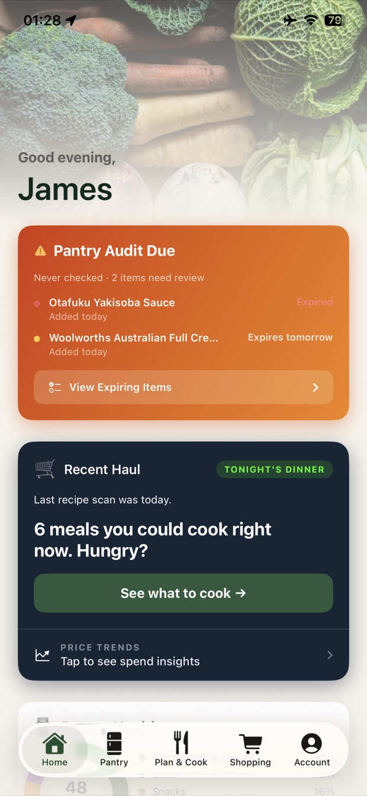
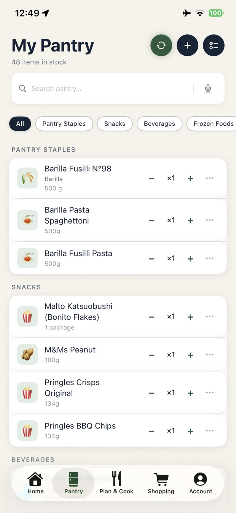
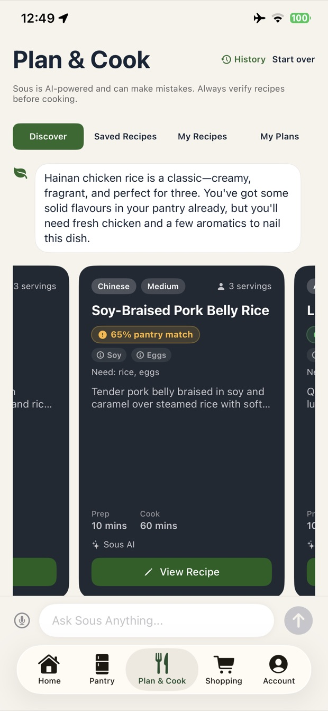
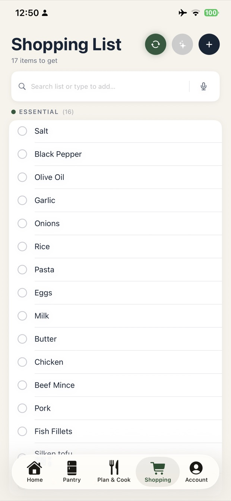
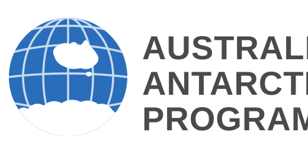
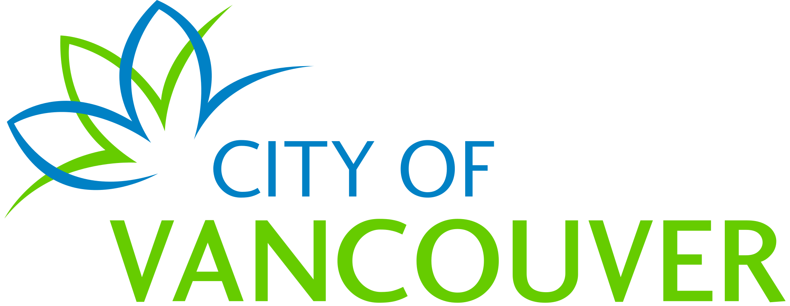
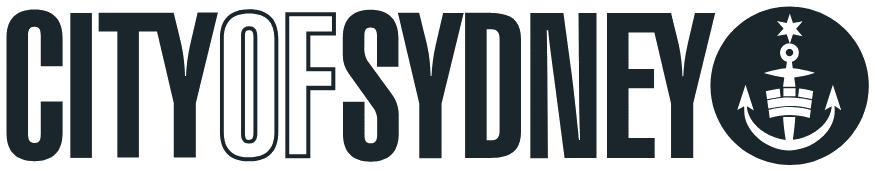
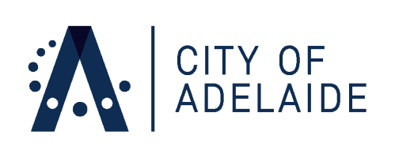
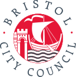

I am a Product Designer
I design and ship products that turn complexity into clarity: enterprise systems, AI-native workflows & developer tools.
Over 14 years I've led product design across B2B enterprise SaaS, internal platforms, and AI-native workflows, at organisations including Macquarie Group and Siemens, working in continuous discovery cycles and measuring impact through data, not assumptions.
I also shipped Sous Pantry to the App Store entirely solo: a full-stack AI app built with Claude Code. No co-founder. No agency. Just a designer who builds things and solves your challenges.
Melbourne, AU
Live on the App Store




Sous PantryOne designer. One full-stack app. Shipped solo.
Where my work is used
Melbourne
Contact
Writing
Strengths
Merge numbers
Swipe, or click a side
Arrow keys work too
0 · best 0
Focus
- Digital Products
- Enterprise Systems (ERP)
- AI Adoption
- Workflow Automation
- Mobile App Development
- Web Development
- Developer Tools
Design leadership philosophy1 / 6
Organisations using Work Planner





Selected work
Five projects
About
Lead Product Designer · Design Technologist · d.MBA
Who I am
A designer who still builds.
I loved drawing as a kid, then computers pulled me in. My first job was front-end development, with some graphic design and UX on the side. Over 14 years I moved into product design and then design leadership, across enterprise software, a regulated bank and now my own studio.
At Macquarie I kept seeing good design get lost between the designer's file and the engineer's code. So I worked on that gap: first with the design system, then by getting my team to build working prototypes with AI, so engineers picked up something real.
Since December 2025 I've run Jamesian Studio. I designed and shipped Sous Pantry, an AI app, with Claude Code, and learned first-hand what makes AI safe to work with: clear rules, a person checking, and honest failure states.
I finished a Design MBA in 2026 because design has to make sense to the business too. It changed how I talk about trade-offs and cost.
People matter to me as much as the work. I've led and mentored designers for about seven years, through hiring, critique and promotions. If you want to talk design or swap notes, I'm always up for it.

Design pillar01
AI and agentic experiences
AI that people can trust with real decisions. It does the research, shows its working, and says when it isn't sure. A person still makes the call.
Design pillar02
Design that pays its way
I tie design to what the business already measures: adoption, time saved, fewer support tickets. If I can't show it moved something, I keep working on it.
Design pillar03
Systems that survive code
Design systems that designers and engineers both actually use: tokens, shared components and the rules around them.
Design pillar04
Evidence over opinion
Research, testing and usage data before the big calls, with accessibility (WCAG 2.2 AA) built in from the start.
Tools I work with
- Design & Research
- Figma
- FigJam
- Miro
- Adobe Creative Suite
- Sketch
- Insights & Validation
- UserTesting.com
- Lookback
- Maze
- Hotjar
- Google Analytics
- AI & Build Tools
- Claude Code
- Codex
- Cursor
- n8n
- GitHub
- Supabase
- GitHub Copilot
- Design-to-Code
- Storybook
- HTML / CSS / JS
- Swift (basic)
- React Native (basic)
- Team Ops
- Slack
- Microsoft Teams
- Jira
- Confluence
Beyond work
"Let all that you do be done in love."1 Corinthians 16:14
At 18, I packed up and moved to Germany alone. That experience shaped everything about how I approach the world. It taught me resilience, adaptability, and the value of genuinely connecting with people who see things differently than you do.
Outside of work, I prioritise time with my family, especially on weekends. I serve at my local church, which brings me a lot of joy, and I train at the gym regularly or get out for a run when I need to switch off completely. I also find myself deeply immersed in a LEGO build sometimes, analysing brick by brick, or down a documentary rabbit hole with a very good coffee in hand.
- Family
- Church
- Fitness
- LEGO
- Documentaries
- Coffee
My Toolkit
14 core tools · 7 guides
Thinking tools
The thinking tools I use at work.
14 core tools for everyday decisions and 7 longer guides. Pick any one and it opens ready to use.
Core toolsPick one to open it
- 01Second-Order ThinkingConsequences
- 02Eisenhower MatrixPrioritisation
- 03Decision MatrixComparison
- 04Connection CirclesSystems
- 05Conflict ResolutionWin-win
- 06Ladder of InferenceReasoning
- 07OODA LoopSpeed
- 08First PrinciplesDecomposition
- 09InversionRisk
- 10Feedback Loop DesignLearning
- 11Perspective TakingEmpathy
- 12Force Field AnalysisChange
- 13Blue Ocean StrategyStrategy
- 14OKRs & Goal StackingGoals
Design MetricsInteractive
Design KPI Tree
Map a business goal to the design work behind it and the metrics that show it worked.
Failure Prevention30-45 min
The Pre-Mortem Method
Imagine your project has already failed. Now figure out why, before it happens.
Paradox Management45-60 min
Polarity Mapping
Some problems cannot be solved, only managed. Learn the difference and stop fighting yourself.
Leverage & Change1-2 hrs
Systems Thinking Mastery
Find the small interventions that produce large, lasting results.
Idea Generation20-90 min
Creative Problem-Solving Toolkit
Six techniques that professional creatives use when the obvious answers are not working.
Thinking ErrorsReference
Cognitive Biases Field Guide
The 20 biases that most distort decisions in professional life, with practical counters.
Working with AIReference
AI Collaboration Toolkit
Prompting frameworks and workflow patterns that make AI 10x more useful.
Calibration PracticeOngoing
The Decision Journal
Track your predictions over time. The only way to get genuinely better at deciding.